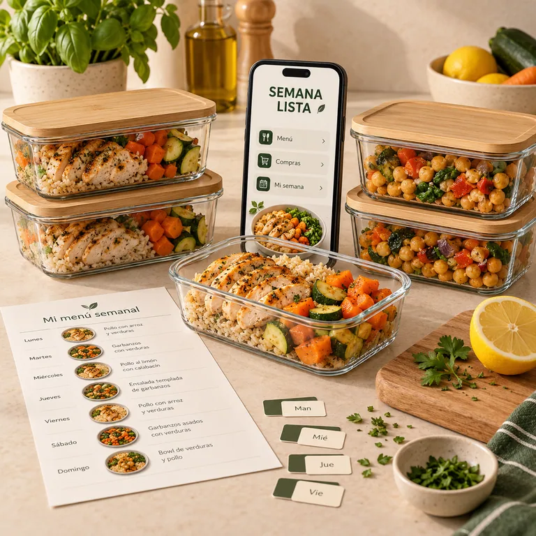
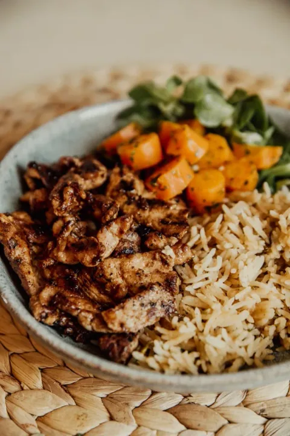
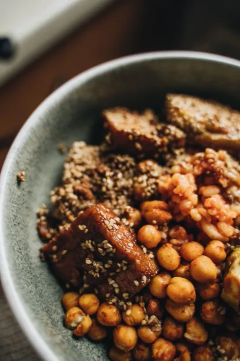
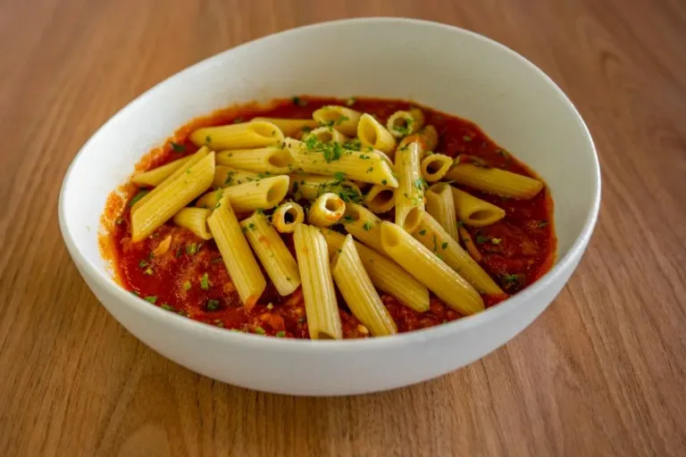
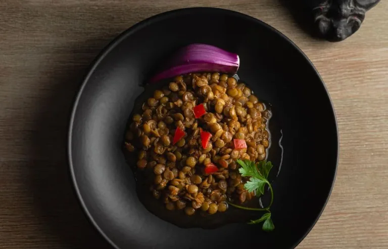
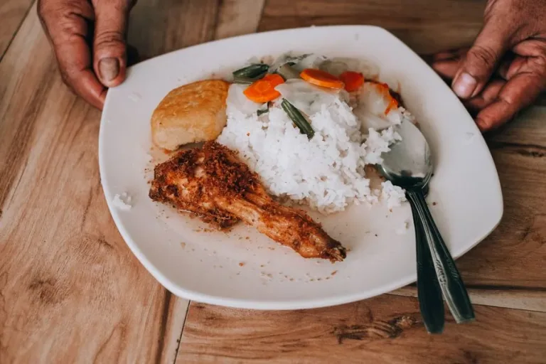
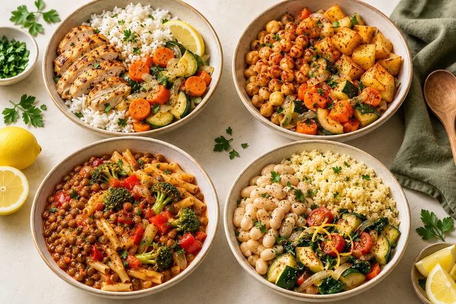

Elige tu semana.
Elige tu menú de la semana. Sabes qué vas a comer antes de encender la cocina.
TU SEMANA SE RESUELVE ANTES DEL LUNES.
Almuerzo y cena de la semana. Menú, compras y preparación organizados para que entre semana solo combines, calientes y comas.
Qué comprar. Cuánto preparar. Qué comer cada día. Deja de decidir la cena cuando ya estás cansada. Sigue tu plan con Semana Lista.

Sí, quiero mi semana resueltaNO ES SOLO COCINAR.
La comida todavía no está hecha.
Pero ya te está ocupando la cabeza.
¿Qué preparo hoy?
¿Tengo lo que necesito?
¿Cocino… o pido algo?
Lo que pesa también es
tener que resolverlo desde cero.
El domingo preparas. La semana, lo agradeces.
IMAGINA ESE MOMENTO.
Pollo, legumbres, arroz, papa y verduras. Variaciones cotidianas para combinar con distintos acompañamientos y condimentos. Elige según tus gustos y tu presupuesto.
INSPÍRATE CON CADA PLATO





PREPARA UNA VEZ. DISFRUTA TU SEMANA.
Sabes qué comprar, qué preparar y qué comer. Sigue el orden y deja de inventar la cena cada noche.
Elige tu menú de la semana. Sabes qué vas a comer antes de encender la cocina.
Consulta las cantidades y descuenta lo que ya tienes. La app del Completo ajusta tu selección.
Sigue la secuencia, organiza tus comidas y consulta qué refrigerar o congelar. Tu siguiente paso está en la guía.
Empieza por un menú. Usa las variaciones cuando las necesites.
TU APP EN EL PLAN COMPLETO
Ajusta las personas y reúne las cantidades de tu selección en una sola lista.

ELIGE. PREPARA. DISFRUTA.En tu celular o para imprimir.
APP INCLUIDA EN EL COMPLETO
Selecciona comidas y prueba las cantidades aquí mismo.
Semana 1 · Selección de tres platos
Salsas y postres · Airfryer · Desayunos y meriendas · Freezer · Menús y etiquetas para imprimir.
ELIGE CÓMO QUIERES EMPEZAR.
Esencial para empezar. Completo para llevar las herramientas y los cinco extras por US$3 más.
PARA EMPEZAR
El punto de partida para dejar de inventar la comida cada noche.
Pago único · Materiales en español
2 ebooks en PDF
Guía práctica + recetario de cuatro semanas.
LA OPCIÓN CON TODO
El sistema principal, la app y los cinco extras. Todo en una sola compra.
Pago único · Materiales en español
7 ebooks + app Semana Lista
Cinco ebooks extra incluidos + archivos editables.
ANTES DE ELEGIR.
Es el tiempo informado por el creador en su nueva prueba del producto base. La duración puede variar con las personas, la selección, el equipo y la experiencia. Las nuevas sustituciones y extras requieren su propio tiempo.
Almuerzo y cena de la semana: diez combinaciones por semana. Tienes cuatro menús y cuarenta combinaciones en total. El Completo añade opciones de desayunos, meriendas y reserva.
Sí. El recetario incluye 20 referencias de cambio y opciones de proteína. La app ajusta la selección original y el cambio vegetal indicado; las demás adaptaciones se anotan a mano. No son equivalencias nutricionales.
No. Consulta los PDFs desde el celular e imprime solo si prefieres. La airfryer corresponde a un extra opcional; el menú principal no depende de ella.
La guía distingue refrigeración y congelación, con una regla específica para el arroz. Sigue el destino de cada ficha y las instrucciones de descongelado y recalentado. Congelar puede cambiar la textura: empieza por una comida si quieres probar el resultado.
Esencial: guía y recetario. Completo: todo lo anterior, cinco ebooks adicionales, la app y los editables por US$3 más. Los extras ya están incluidos; no se compran aparte.
Se usa en navegador. El paquete actual incluye un HTML y sus carpetas, que deben mantenerse juntos. La apertura depende del dispositivo y la compatibilidad en celulares reales aún requiere verificación. El progreso es local, con respaldo manual; no hay sincronización automática.
Son archivos digitales; no se envían libros, dispositivos ni recipientes. Esta página es una versión de revisión y la compra todavía no está habilitada.
NO TIENES QUE INVENTAR OTRO MENÚ HOY.
Esencial US$6,90 · Completo US$9,90